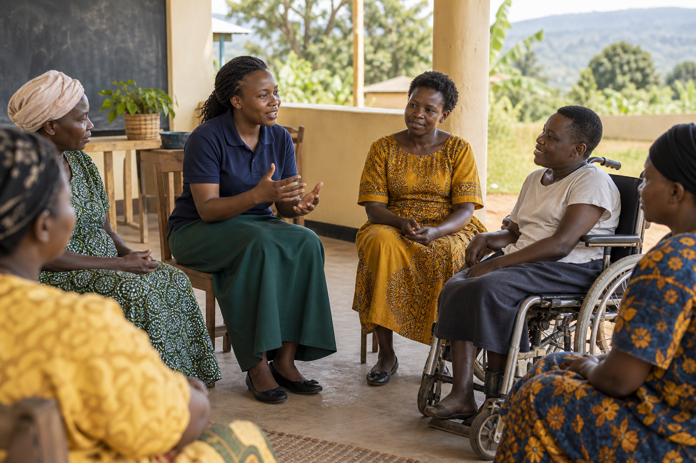

School health awareness
Clear, respectful information supporting learner wellbeing.
Health & community support
Planned initiatives connect respectful health information, safe learning spaces and essential community facilities.
Planned initiative
A proposed programme for age-appropriate school health awareness, accurate HIV education and respectful support without stigma.
Language, safeguarding and delivery arrangements should be reviewed with qualified health partners.

Sample imageClear, respectful information supporting learner wellbeing.
Non-stigmatising awareness and referral developed with qualified partners.
Proposed WASH awareness and facility improvement.
Planned accessible spaces for learning and support.
Possible improvement of safe, inclusive learning environments.
Proposed construction or rehabilitation subject to planning, approvals and partners.